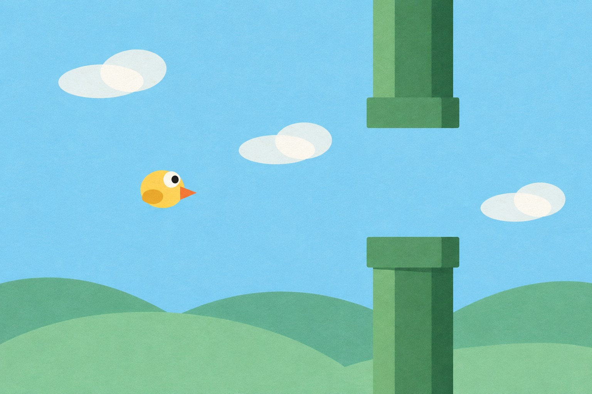

A head-controlled flying game
Move your head.
Guide the bird.
Your webcam becomes the controller. A trained AI model reads your head position and guides a little bird between the pipes.
Opens in your browser · Keyboard controls work too

- Look upThe bird rises
- Look straightThe bird stays level
- Look downThe bird descends